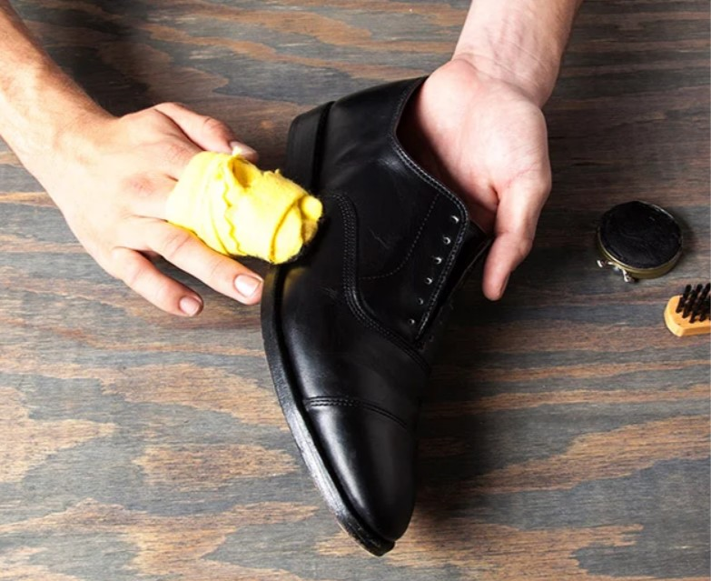

There are many shoe for different kind of occation. We wear some shoe more than the other. Sometime we will wear a shoe for a very long time. We will get attach to our shoes. Its very important to take care of our beloved shoe and have a long loving relationsip with our shoe.
Direct sunlight and extreme heat will damage your shoe. Your shoe will stiffen up and dry rot.Instead, place your shoe in a dry and cool enviroment like a shoe rack.
Shoes hate moisture! Moisture will cause the growth of bacteria and result in the shoe break down. After a rainy or wet day, you can use silica pouches or gels to keep the shoe dry and bacteria free. If you dont have silica, you can stuff your shoe with newspaper instead.
Shoe the are worn regullary will easily collect dust. Dust will cause the shoe to loss its natural colour and make it look old. Shoe should be clean or polish reguallary. If you dont wear the shoe, you should always keep them in a shoe closet.
Lether shoe are harder to maintain. If you like your leather shoe, you should regually polish and shiner them. Polish and shiner keep the shoe young.
A very basic advice. But here are some tips on keeping shoe clean.
1. Tap you shoe after wearing them to keep the dust off.
2. Brush the sole of your shoe.
3. Use dry painbrush to get rib of dirt from the grooves of shoe soles.
Here are some tips on taking care the shoe. Remember these tips and you can keep you favorite shoe for a long long time.